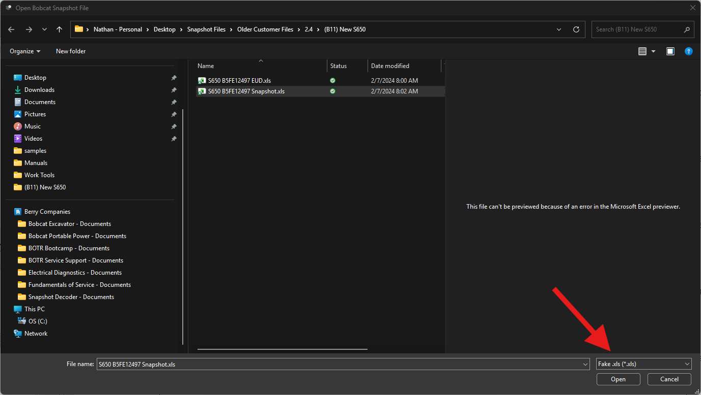

The Open File Dialog
Snapshot Decoder makes it easy to open and analyze your engine snapshot files.
How to Open a Snapshot
- Click
File → Open Snapshot or press Ctrl+O
- Navigate to your snapshot file location
- Select the file and click Open
Drag and Drop
You can skip the file dialog entirely by dragging a snapshot file straight onto the
Snapshot Data panel. This works whether the panel is showing its empty state
or a snapshot is already loaded.
- Drag a
.xls or .xlsx file from Windows Explorer
- Drop it anywhere on the Snapshot Data panel – the panel outlines in blue while
a valid file is hovering over it
- The file loads immediately, the same as using Open Snapshot
Note: If a snapshot is already loaded, dropping a new file prompts the same
confirmation as opening one from the toolbar, since the current charts and chart cart cannot
be recovered afterward. If you drop multiple files at once, only the first valid one is opened.
Filtering File Types
Use the file type filter dropdown to quickly find your snapshot files:

Tip: The filter defaults to showing Excel files (.xls, .xlsx) which are the
standard format exported from Bobcat Engine Analyzer.
Supported File Formats
- .xls - Excel workbook (default format from Bobcat Engine Analyzer)
- .xlsx - Excel workbook (if saved in newer format)
Complete snapshots only: Snapshot Decoder can only correctly identify
complete snapshot files – a full export from Bobcat Engine Analyzer.
Files saved with only a selection of PIDs are likelymissing key PIDs Snapshot
Decoder needs to detect the snapshot type, and will fail identification. If this happens,
the status bar shows
Raw data loaded (identification failed) and the file is
loaded as unprocessed raw data instead of a recognized snapshot – see the
Status Bar page for details.
After Opening
Once a file is opened, Snapshot Decoder will:
- Automatically detect the snapshot type
- Load and parse the raw snapshot data
- Display header information and engine hours
- Configure available Quick Charts and My Charts for your snapshot type